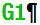

The window of the current block display shows the program blocks currently being executed.
Display of current program
The following information is displayed in the running program:
-
The workpiece name or program name is entered in the header line.
-
The program block which is just being processed appears colored.
Display of the machining times
If you set that the machining times are to be recorded in the settings for automatic mode, the measured times are shown at the end of the line as follows:
Highlighting of selected G code commands or keywords
In the program editor settings, you can specify whether selected G code commands are to be highlighted in color. The following colors are used as standard:
Display | Meaning |
|---|---|
Blue font | D, S, F, T, M and H functions |
Red font | "G0" motion command |
Green font  | "G1" motion command |
Blue-green font | "G2" or "G3" motion command |
Gray font | Comment |
| | Machine manufacturer You can define further highlight colors in the "sleditorwidget.ini" configuration file. Please refer to the machine manufacturer's instructions. |
Editing a program directly
In the Reset state, you can edit the current program directly.